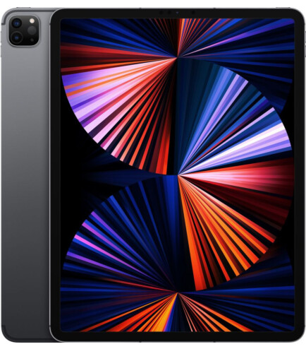

Ціна: Колір:
44 000 Сірий
_________________________________________________________________
Оновлений iPad Pro 12.9"відкриває нові горизонти продуктивності, швидкості, автономності та комфорту. Унікальний чіп М1 забезпечує безпрецедентну продуктивність. Неймовірно яскравий і контрастний дисплей XDR і швидкий бездротовий зв'язок створюють кращі умови для роботи, спілкування і відпочинку. Універсальний порт Thunderbolt дозволяє легко підключати зовнішні аксесуари та пристрої, а також швидко обмінюватися інформацією.
нноваційний чіп М1 поєднує в собі неймовірну потужність, швидкодію і передові функції. M1 вміщує безліч унікальних компонентів і використовує архітектуру об'єднаної пам'яті, що дозволяє значно підвищити швидкість і енергоефективність. Ваш iPad Pro може працювати цілий день без підзарядки, демонструючи видатну продуктивність.
8-ядерний центральний процесор в чіпі М1 підвищує продуктивність до 50 %. 8-ядерний графічний процесор прискорює обробку графіки до 40 %. Це дає можливість використовувати iPad Pro для роботи з доповненою реальністю і грати в вимогливі ігри на максимальних налаштуваннях.
На дисплеї Liquid Retina XDR діагоналлю 12.9 дюйма з контрастністю 1 000 000:1 будь-яке зображення виглядає неймовірно яскравим і живим. Підтримка передових технологій True Tone і ProMotion, а також широке колірне охоплення Р3 піднімають якість картинки на небачені висоти.
Задня сторона дисплея покрита світлодіодами mini LED, які в 120 разів менше попереднього покоління. Міні-діоди згруповані в локальні зони затемнення, які дозволяють окремо регулювати яскравість дисплея в кожній зоні і отримувати контрастність 1 000 000:1. Система унікальних оптичних плівок і розсіювачів ефективно і рівномірно розподіляє світло по всій площі екрану, не залишаючи темних нечітких ділянок. Події на екрані захоплюють своєю реалістичністю і чіткістю в кожній деталі.
____________________________________
©Мироненко А.О.